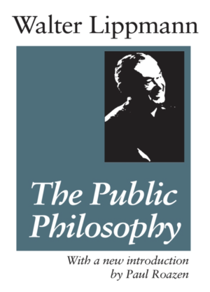

I was browsing in one of the few remaining second-hand bookshops around (as is my wont) when I came upon Walter Lippmann’s 1955 book, The Public Philosophy. Walter Lippmann was one of the great journalists and thinkers of the 20th century. And wrote a series of books which were landmarks in their day, despite uniformly bland titles. Public opinion. The good life. And this one — The public philosophy.
Reading part 1. I was shocked to discover a critique of democracy that I had not really crystallised for myself. It comprehends two tendencies both of which are at their most disastrous in the avoidance of war on the one hand and the fighting of wars on the other.
In the first place there’s what I’ll call temporal mismatch. It can take an electorate years to catch up with emerging developments and so public opinion can be a disastrous guide to the exigencies of a particular situation. A further aspect of public opinion is its capacity for wild swings in sentiment which I’ll call temperamental amplification.
Lipman explains how democracies wildly overshoot. They’re not good at avoiding war by preparing properly for it. It is easy to understand why that is. Wars are very expensive. So preparing for them is expensive too. That means that politicians get the choice between warning the electorate and preparing for war and winning elections. If they call for more military spending their democratic opponent will say that it can be handled without serious financial pain — either because the threat is overblown or because it can be managed via borrowing or some other evasively defined expedient.
Then, as war looms larger, far greater sacrifice than would otherwise have been necessary is called for, alongside industrial scale demonisation of the enemy. We’re somewhat familiar with this narrative from WWII, but Lippmann extends it back to the insoucience of war before WWI, the imposition of the Carthaginian Peace of 1919 which, in humiliating Germany made Round Two of the Great War all the more likely. (Lippmann became fast friends with Keynes when they were both attending the Versailles Peace Conference. Coming to terms with the cataclysm of that war and its peace burned itself deeply into both men’s thought.)
Of course, this is directly relevant to today's circumstances, where the economic hangover from both COVID and Europe’s first major war in eighty years is intensifying the scarcity of energy and food, and in so doing, undermining living standards. A further demand is to get Ukraine the arms it needs to fight off the Russians — but that’s expensive too.
But how much are our political leaders levelling with their populations? They’re not of course. Because to do so they’d have to say something like “Here’s the plan. We need to reduce living standards compared to what they would otherwise be by 2-3%. Then their opponents will denouce this as the council of despair and incompetence come out and say they can do all they need to do without such hardship.
An extract from Lippmann is over the fold.
The Malady of Democratic States
1. Public Opinion in War and Peace
WRITING in 1913, just before the outbreak of the war, and having in mind Queen Victoria and King Edward the VII, Sir Harry Johnston thus described how foreign affairs were conducted in the Nineteenth Century:
In those days, a country’s relations with its neighbors or with distant lands were dealt with almost exclusively by the head of the State — Emperor, King, or President — acting with the more-or-less dependent Minister-of-State, who was no representative of the masses, but the employee of the Monarch. Events were prepared and sprung on a submissive, a confident, or a stupid people. The public Press criticized, more often applauded, but had at most to deal with a fait accompli and make the best of it. Occasionally, in our own land, a statesman, out of office and discontented, went round the great provincial towns agitating against the trend of British foreign policy—perhaps wisely, perhaps unfairly, we do not yet know — and scored a slight success. But once in office, his Cabinet fell in by degrees with the views of the Sovereign and the permanent officials (after the fifties of the last century these public servants were a factor of ever-growing importance); and, as before, the foreign policy of the Empire was shaped by a small camarilla consisting of the Sovereign, two Cabinet Ministers, the permanent Under-Secretary of State for Foreign Affairs, and perhaps one representative of la plus haute finance.1
Without taking it too literally, this is a fair description of how foreign affairs were conducted before the First World War. There were exceptions. The Aberdeen government, for example, was overthrown in 1855 because of its inefficient conduct of the Crimean War. But generally speaking, the elected parliaments were little consulted in the deliberations which led up to war, or on the high strategy of the war, on the terms of the armistice, on the conditions of peace. Even their right to be informed was severely limited, and the principle of the system was, one might say, that war and peace were the business of the executive department. The power of decision was not in, was not even shared with, the House of Commons, the Chamber of Deputies, the Reichstag.
The United States was, of course, a special case. The Congress has always had constitutional rights to advise and to be consulted in the declaration of war and in the ratification of treaties. But at the time I am talking about, that is to say before the First World War broke out, it was American policy to abstain from the role of a great power, and to limit its sphere of vital interests to the Western Hemisphere and the North Pacific Ocean. Only in 1917 did the American constitutional system for dealing with foreign affairs become involved with the conduct of world affairs.
For the reasons which I outlined in the first chapter this system of executive responsibility broke down during the war, and from 1917 on the conduct of the war and then the conditions of the armistice and the peace were subjected to the dominating impact of mass opinions.
Saying this does not mean that the great mass of the people have had strong opinions about the whole range of complex issues which were before the military staffs and the foreign offices. The action of mass opinion has not been, and in the nature of things could not be, continuous through the successive phases in which affairs develop. Action has been discontinuous. Usually it has been a massive negative imposed at critical junctures when a new general course of policy needed to be set. There have, of course, been periods of apathy and of indifference. But democratic politicians have preferred to shun foresight about troublesome changes to come, knowing that the massive veto was latent, and that it would be expensive to them and to their party if they provoked it.
In the winter of 1918–1919, for example, Lloyd George, Clemenceau, Wilson and Orlando were at a critical juncture of modern history. The Germans were defeated, their government was overthrown, their troops disarmed and disbanded. The Allies were called upon to decide whether they would dictate a punitive peace or would negotiate a peace of reconciliation.
In the Thirties the British and the French governments had to decide whether to rearm and to take concerted measures to contain Hitler and Mussolini or whether to remain unarmed and to appease them. The United States had to decide whether to arm in order to contain the Japanese or to negotiate with them at the expense of China.
During the Second World War, the British and the American governments had again to make the choice between total victory with unconditional surrender and negotiated settlements whose end was reconciliation.
These were momentous issues, like choosing at the fork of the road a way from which there is no turning back: whether to arm or not to arm — whether, as a conflict blows up, to intervene or to withdraw — whether in war to fight for the unconditional surrender of the adversary or for his reconciliation. The issues are so momentous that public feeling quickly becomes incandescent to them. But they can be answered with the only words that a great mass qua mass can speak — with a Yes or a No.
Experience since 1917 indicates that in matters of war and peace the popular answer in the democracies is likely to be No. For everything connected with war has become dangerous, painful, disagreeable and exhausting to very nearly everyone. The rule to which there are few exceptions — the acceptance of the Marshall Plan is one of them — is that at the critical junctures, when the stakes are high, the prevailing mass opinion will impose what amounts to a veto upon changing the course on which the government is at the time proceeding. Prepare for war in time of peace? No. It is bad to raise taxes, to unbalance the budget, to take men away from their schools or their jobs, to provoke the enemy. Intervene in a developing conflict? No. Avoid the risk of war. Withdraw from the area of the conflict? No. The adversary must not be appeased. Reduce your claims on the area? No. Righteousness cannot be compromised. Negotiate a compromise peace as soon as the opportunity presents itself? No. The aggressor must be punished. Remain armed to enforce the dictated settlement? No. The war is over.
The unhappy truth is that the prevailing public opinion has been destructively wrong at the critical junctures. The people have imposed a veto upon the judgments of informed and responsible officials. They have compelled the governments, which usually knew what would have been wiser, or was necessary, or was more expedient, to be too late with too little, or too long with too much, too pacifist in peace and too bellicose in war, too neutralist or appeasing in negotiation or too intransigent. Mass opinion has acquired mounting power in this century. It has shown itself to be a dangerous master of decisions when the stakes are life and death.
2. The Compulsion to Make Mistakes
THE ERRORS of public opinion in these matters have a common characteristic. The movement of opinion is slower than the movement of events. Because of that, the cycle of subjective sentiments on war and peace is usually out of gear with the cycle of objective developments. Just because they are mass opinions there is an inertia in them. It takes much longer to change many minds than to change a few. It takes time to inform and to persuade and to arouse large scattered varied multitudes of persons. So before the multitude have caught up with the old events there are likely to be new ones coming up over the horizon with which the government should be preparing to deal. But the majority will be more aware of what they have just caught up with near at hand than with what is still distant and in the future. For these reasons, the propensity to say "No" to a change of course sets up a compulsion to make mistakes. The opinion deals with a situation which no longer exists.
When the world wars came, the people of the liberal democracies could not be aroused to the exertions and the sacrifices of the struggle until they had been frightened by the opening disasters, had been incited to passionate hatred, and had become intoxicated with unlimited hope. To overcome this inertia the enemy had to be portrayed as evil incarnate, as absolute and congenital wickedness. The people wanted to be told that when this particular enemy had been forced to unconditional surrender, they would re-enter the golden age. This unique war would end all wars. This last war would make the world safe for democracy. This crusade would make the whole world a democracy.
As a result of this impassioned nonsense public opinion became so envenomed that the people would not countenance a workable peace; they were against any public man who showed “any tenderness for the Hun,” or was inclined to listen to the “Hun food snivel.”2
3. The Pattern of the Mistakes
IN ORDER to see in its true perspective what happened, we must remember that at the end of the First World War, the only victorious powers were the liberal democracies of the West. Lenin, who had been a refugee in Switzerland until 1917, was still at the very beginning of his struggle to become the master of the empire of the Romanoffs. Mussolini was an obscure journalist, and nobody had dreamed of Hitler. The men who took part in the Peace Conference were men of the same standards and tradition. They were the heads of duly elected governments in countries where respect for civil liberty was the rule. Europe from the Atlantic to the Pripet Marshes lay within the military orbit of their forces. All the undemocratic empires, enemy and ally, had been destroyed by defeat and revolution. In 1918 — unlike 1945 — there had been no Yalta, there was no alien foreign minister at the peace conference who held a veto on the settlement.
Yet as soon as the terms of the settlement were known, it was evident that peace had not been made with Germany. It was not for want of power but for want of statesmanship that the liberal democracies failed. They failed to restore order in that great part of the world which — outside of revolutionary Russia — was still within the orbit of their influence, still amenable to their leadership, still subject to their decisions, still working within the same economy, still living in the same international community, still thinking in the same universe of discourse. In this failure to make peace, there was generated the cycle of wars in which the West has suffered so sudden and so spectacular a decline.
Public opinion, having vetoed reconciliation, had made the settlement unworkable. And so when a new generation of Germans grew up, they rebelled. But by that time, the Western democracies, so recently too warlike to make peace with the unarmed German Republic, had become too pacifist to take the risks which could have prevented the war Hitler was announcing he would wage against Europe. Having refused the risk of trying to prevent war, they would not now prepare for the war. The European democracies chose to rely on the double negative of unarmed appeasement, and the American democracy chose to rely on unarmed isolation.
When the unprevented war came, the fatal cycle was repeated. Western Europe was defeated and occupied before the British people began seriously to wage the war. And after the catastrophe in Western Europe, eighteen agonizing months of indecision elapsed before the surprise and shock of Pearl Harbor did for the American people what no amount of argument and evidence and reason had been able to do.
Once again it seemed impossible to wage the war energetically except by inciting the people to paroxysms of hatred and to utopian dreams. So they were told that the Four Freedoms would be established everywhere, once the incurably bad Germans and the incurably bad Japanese had been forced to surrender unconditionally. The war could be popular only if the enemy was altogether evil and the Allies very nearly perfect. This mixture of envenomed hatred and furious righteousness made a public opinion which would not tolerate the calculated compromises that durable settlements demand. Once again the people were drugged by the propaganda which had aroused them to fight the war and to endure its miseries. Once again they would not think, once again they would not allow their leaders to think, about an eventual peace with their enemies, or about the differences that must arise among the Allies in this coalition, as in all earlier ones. How well this popular diplomacy worked is attested by the fact that less than five years after the democracies had disarmed their enemies, they were imploring their former enemies, Germany and Japan, to rearm.
The record shows that the people of the democracies, having become sovereign in this century, have made it increasingly difficult for their governments to prepare properly for war or to make peace. Their responsible officials have been like the ministers of an opinionated and willful despot. Between the critical junctures, when public opinion has been inattentive or not vehemently aroused, responsible officials have often been able to circumvent extremist popular opinions and to wheedle their way towards moderation and good sense. In the crises, however, democratic officials — over and above their own human propensity to err — have been compelled to make the big mistakes that public opinion has insisted upon. Even the greatest men have not been able to turn back the massive tides of opinion and of sentiment.
There is no mystery about why there is such a tendency for popular opinion to be wrong in judging war and peace. Strategic and diplomatic decisions call for a kind of knowledge — not to speak of an experience and a seasoned judgment — which cannot be had by glancing at newspapers, listening to snatches of radio comment, watching politicians perform on television, hearing occasional lectures, and reading a few books. It would not be enough to make a man competent to decide whether to amputate a leg, and it is not enough to qualify him to choose war or peace, to arm or not to arm, to intervene or to withdraw, to fight on or to negotiate.
Usually, moreover, when the decision is critical and urgent, the public will not be told the whole truth. What can be told to the great public it will not hear in the complicated and qualified concreteness that is needed for a practical decision. When distant and unfamiliar and complex things are communicated to great masses of people, the truth suffers a considerable and often a radical distortion. The complex is made over into the simple, the hypothetical into the dogmatic, and the relative into an absolute. Even when there is no deliberate distortion by censorship and propaganda, which is unlikely in time of war, the public opinion of masses cannot be counted upon to apprehend regularly and promptly the reality of things. There is an inherent tendency in opinion to feed upon rumors excited by our own wishes and fears.
4. Democratic Politicians
AT THE critical moments in this sad history, there have been men, worth listening to, who warned the people against their mistakes. Always, too, there have been men inside the governments who judged correctly, because they were permitted to know in time, the uncensored and unvarnished truth. But the climate of modern democracy does not usually inspire them to speak out. For what Churchill did in the Thirties before Munich was exceptional: the general rule is that a democratic politician had better not be right too soon. Very often the penalty is political death. It is much safer to keep in step with the parade of opinion than to try to keep up with the swifter movement of events.
In government offices which are sensitive to the vehemence and passion of mass sentiment public men have no sure tenure. They are in effect perpetual office seekers, always on trial for their political lives, always required to court their restless constituents. They are deprived of their independence. Democratic politicians rarely feel they can afford the luxury of telling the whole truth to the people.3 And since not telling it, though prudent, is uncomfortable, they find it easier if they themselves do not have to hear too often too much of the sour truth. The men under them who report and collect the news come to realize in their turn that it is safer to be wrong before it has become fashionable to be right.
With exceptions so rare that they are regarded as miracles and freaks of nature, successful democratic politicians are insecure and intimidated men. They advance politically only as they placate, appease, bribe, seduce, bamboozle, or otherwise manage to manipulate the demanding and threatening elements in their constituencies. The decisive consideration is not whether the proposition is good but whether it is popular — not whether it will work well and prove itself but whether the active talking constituents like it immediately. Politicians rationalize this servitude by saying that in a democracy public men are the servants of the people.
This devitalization of the governing power is the malady of democratic states. As the malady grows the executives become highly susceptible to encroachment and usurpation by elected assemblies; they are pressed and harassed by the higgling of parties, by the agents of organized interests, and by the spokesmen of sectarians and ideologues. The malady can be fatal. It can be deadly to the very survival of the state as a free society if, when the great and hard issues of war and peace, of security and solvency, of revolution and order are up for decision, the executive and judicial departments, with their civil servants and technicians, have lost their power to decide.
Footnotes
1 Sir Harry Johnston, “Common Sense in Foreign Policy,” pp. 1–2, cited in Howard Lee McBain & Lindsay Rogers, The New Constitutions of Europe (1922), p. 139.
2 Cf. Harold Nicholson, Peacemaking, Chap. III.
3 “As we look over the list of the early leaders of the republic, Washington, John Adams, Hamilton, and others, we discern that they were all men who insisted upon being themselves and who refused to truckle to the people. With each succeeding generation, the growing demand of the people that its elective officials shall not lead but merely register the popular will has steadily undermined the independence of those who derive their power from popular election. The persistent refusal of the Adamses to sacrifice the integrity of their own intellectual and moral standards and values for the sake of winning public office or popular favor is another of the measuring rods by which we may measure the divergence of American life from its starting point.” James Truslow Adams, The Adams Family (1930), p. 95.
What would have saved us is a constitution that placed a hierarchy of expertise between the people and their government, and an education system that cultivated respect for expertise amongst the people and compassion for the people amongst the experts.